Portofino

Stewart goes down to the beach to introduce himself to Veronica Bray (Paraggi Bay).
Santa Margherita

Jason King leaves a bar in Costa del Sol after failing to find Elaine there (6 Via Pescino).
Footage here: https://youtu.be/PV9pSnzrJrM
Salerno
AmalfiTHE
SAINT: The Golden
Journey (Robert S. Baker, October 1962)
The story opens in a costal town on the The Costa Brave, Spain (all
images of the costal town are Amalfi).
DANGER
MAN: It's up to the
Lady (Peter Maxwell: May 1964)
John Drake arrives at the Greek fishing village ahead of Paula Glover.
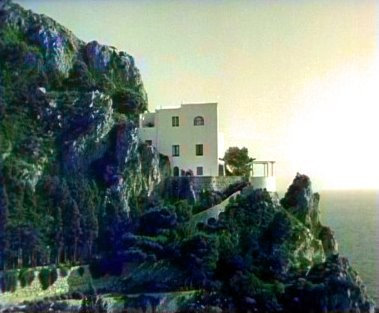
DANGER
MAN: Say It With
Flowers (Peter Yates 1965)
Drake goes to visit Wallace in his house in Einhousen, (Porto di
Tregara, Capri World Backgrounds clip 307521, “Pan In From The Sea R-L
To Reveal Fairly Large White Villa Set In Rocky Terrain Overlooking the
Sea”)
THE
SAINT: The Man Who
Liked Lions (Jeremy Summers: July 1966)
Simon Templar takes a taxi to a coastal town and pays a visit to the
home of Signora Zambetti (Marina Piccola).
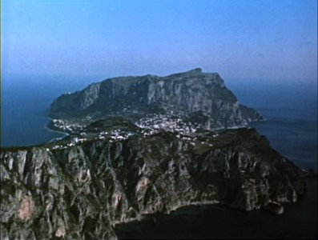
THE
SAINT: Vendetta for
The Saint (Jim O’Connolly: December, 1967)
The Saint is flown by helicopter from Naples
to Capri to meet Allessadro Destamiot.
Verona
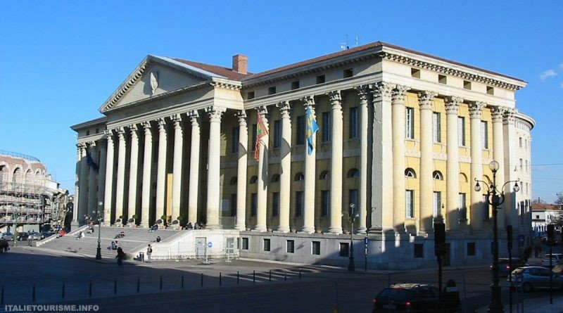
THE SAINT: The
Damsel in Distress
(Peter Yates: Aug/Sep 1964)
Allesandro and Simon Templar arrive in Florence and take a taxi to see
Guido.
(Identified by Pierre Alfonsi, May 2023)
Veneto
RETURN
OF THE SAINT: Hot Run
(Peter Sasdy: April 1978)
Most of the action takes place in and around Cortina.
RETURN
OF THE SAINT: Appointment in Florence
(Peter Sasdy: April 1978)
Christian Van Esser (Bryan Pinero) is kidnapped and
murdered while skiing with Simon Templar (Ian Ogilvy). Simon was
distracted by Helga (Tamara Triffez) while her colleagues make off with
Christian. Later the body of Christian is found in a cable car.
Fiesole
RETURN
OF THE SAINT: Appointment in Florence
(Peter Sasdy: April 1978)
Simon is summoned to the Roman Theatre to find the location of the
stolen money.
Florence

DANGER MAN: Have
a Glass Of Wine (Peter Maxwell: 1964)
John Drake has followed Kathleen Mary Martin from Paris to a hotel in
Burgundy. He checks in (St Gegis Hotel (formerly Grand Hotel), Piazza
Ognissanti).
(Identified by Sietse Postma, February 2025)
THE
SAINT: The Damsel in
Distress (Peter Yates: Aug/Sep 1964)
Simon Templar goes to Florence to investigate the whereabouts of
Guyiseppe Rolfieri.
RETURN
OF THE SAINT: Appointment
in Florence (Peter Sasdy: April 1978)
After the murder of his friend, Simon Templar takes his crusade to
Florence.
Film: Le Ragazze di San Frediano (1955)
MilanLombardy
MAN
IN A SUITCASE: Dead
Man's
Shoes (Peter Duffell: May 1967)
Gilsen is lying low in a hotel in Milan (establishing shot
of Milan Cathedral).
(Spotted by Paul Stroud, October 2008)
Monte Argentario
RETURN
OF THE SAINT: The
Judas Game (Jeremy Summers: May 1978)
All the action for this episode takes place on the “island” including
scenes at the Albanian mountain prison (Forte Rocca).
RETURN
OF THE SAINT: Dragon
Seed (Leslie Norman: May 1978)
All the action for this episode takes place on the “island” including
scenes at the home of Domenico (Hotel Il Pellecano, Porto Ercole).
Naples
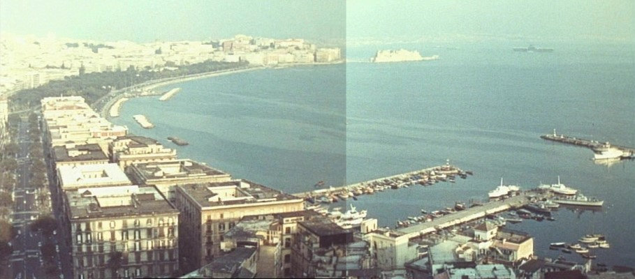
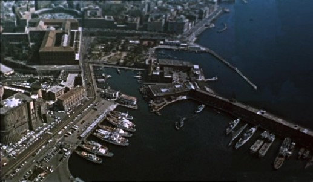
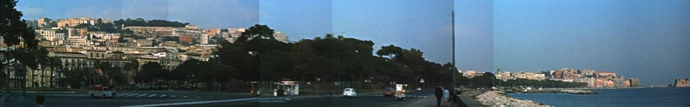
THE BARON:
Night of the Hunter
(Roy Baker: July 1966)
Mannering and Cordelia are in a troubled country (Establishing shot of
the Bay of Naples).
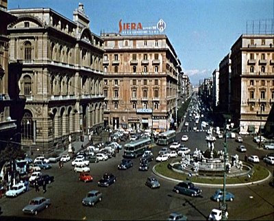
Piazza Giovanni Bovio
THE
BARON: The Long, Long
Day (Roy Baker: April 1966)
Marco Navini and his brother Bruno are hosting a party where Pia
Vallachio is killed with Maria Pullerno the only witness (Corso Umberto
I/Piazza Giovanni Bovio).
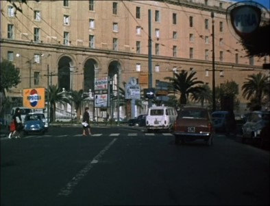
Piazza Carlo III
THE
BARON: Roundabout
(Robert
Tronson: August 1966)
John Mannering is waiting for Georges Delair and Jeanne Vardain their
apartment. Samantha Ballard watches from the street outside
(corner of Piazza Giovanni Bovio
and Corso Umberto I).
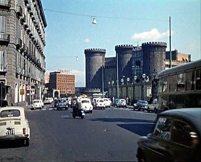
Castel Nuovo
THE
SAINT: Vendetta for
The Saint (Jim O’Connolly: December, 1967)
After visiting the Ristorante Lionardo in Naples, Simon Templar makes
his way back to his hotel (World Backgrounds 7575).
Later Simon is driven to the airport (through Piazza Carlo III with back projection of Piazza Vittoria) and
flown from Naples to Capri.

Piazza Nicola Amore
THE
CHAMPIONS: A Case of
Lemmings (Paul Dickson: Late Summer 1967)
Craig Sterling telephones Del Marco’s apartment (Piazza della Borsa,
Naples) to tell him that his assassination attempt has failed.
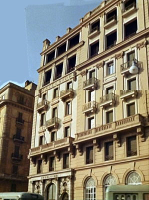
Excelsior Hotel, Via Partenope
DEPARTMENT
S: The Double Death of
Charlie Crippen (John Gilling: Autumn 1968)
Bay of Naples August 14th - The case opens with an establishing shot of
the bay of Naples. Annabelle, Jason and Stewart stay at the Excelsior
Hotel, Via Partenope. Also establishing shot of Castel Nuovo.
When Jason King goes to a luxury care sales room we see Piazza della
Borsa and Piazza Nicola Amore.
(Identified by Paul Stroud, 2015)
DEPARTMENT
S: Les Fleurs du Mal
(Cyril Frankel: Early 1969)
Rome, Italy, September 26th. (Piazza Municipio) Stacey rushes to
Jonny’s apartment in Rome with news that ‘the brothers’ have arrived in
town.
(Identified by Paul Stroud, June 2015)

Piazza Piedigrotta
THE BARON: Night of the Hunter (Roy Baker: July 1966)
Mannering and Cordelia arrive at hotel (former Odeon Cinema in Piazza Piedigrotta).
(Identified by Paul Stroud, June 2015)
Naples Airport
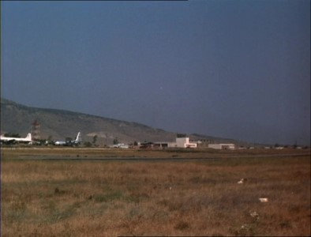
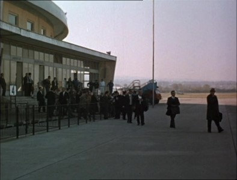
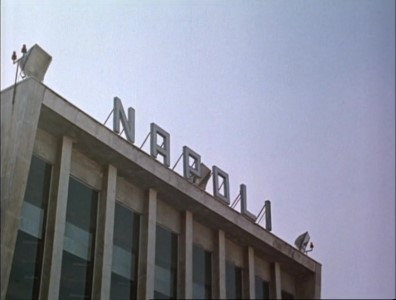
THE SAINT: Vendetta for The Saint (Jim O’Connolly: December, 1967)
The Saint is taken to Naples Airport and flown by helicopter to Capri to meet Allessadro Destamiot. He is later returned to the airport.
Positano
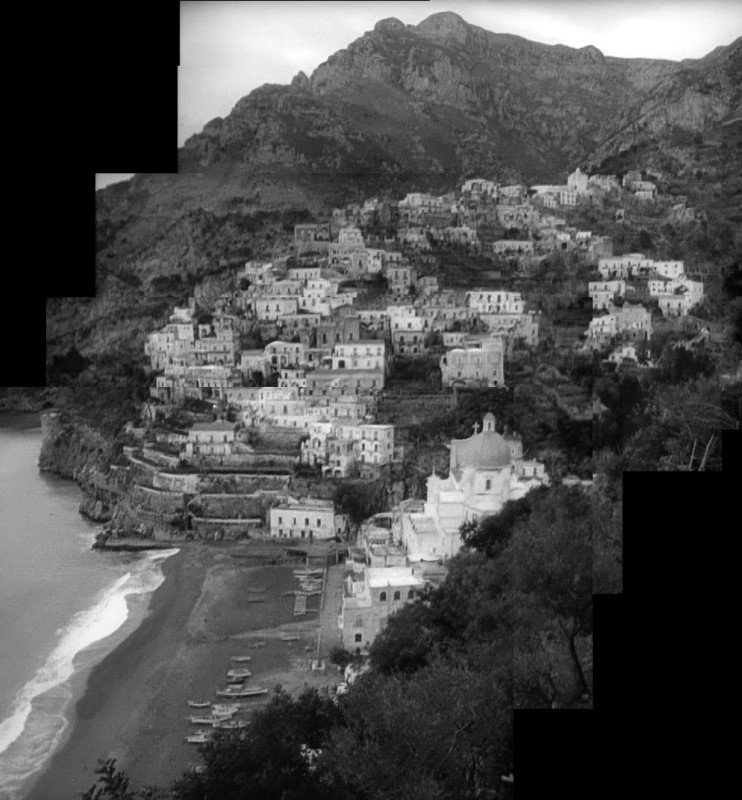
THE SAINT:
The Spanish Cow
(John
Gilling: April 1965)
Establishing shot for the South of France.
Giaglione

THE
CHAMPIONS:
The Final Countdown
(John Gilling:
January 1968)
The conspirators track down the pilot of
Heinkel that
dropped the bomb and pay him a visit (establishing shot of church of
San Vincenzo).
(Identified by Sietse Postma, January 2024)
Monreale
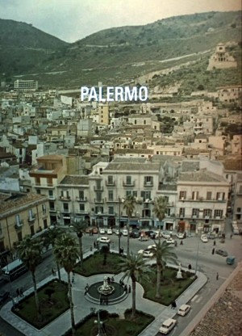
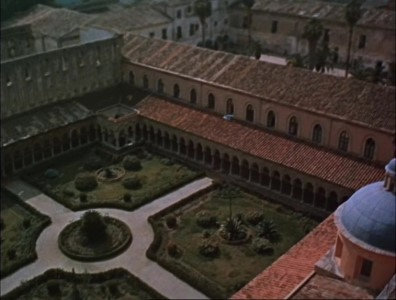
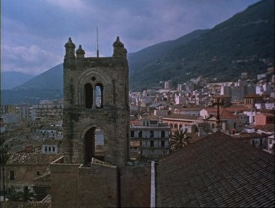
THE SAINT: Vendetta for The Saint (Jim O’Connolly: December, 1967)
The Saint arrives in Palermo to investigate Euston’s claims about The Continental Bank’s former employee, Allessadro Destamio. Later, the Saint takes Gina sightseeing.
Palermo
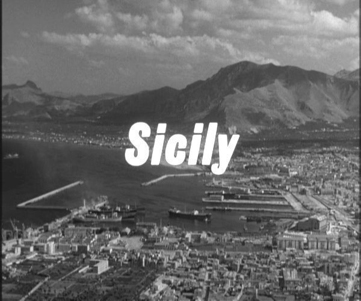
DANGER
MAN: Bury the Dead
(Clive Donner: 1959)
The story opens in Sicilly.
(Identified by Paul Stroud, April 2014)
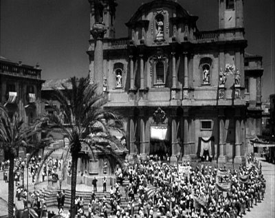
DANGER MAN: Two Birds with One Bullet (Peter Yates: 1965)Speech to Nationalist crowds about the succession to the assassinated Doctor Shargis (Piazza San Domenico, Palermo).
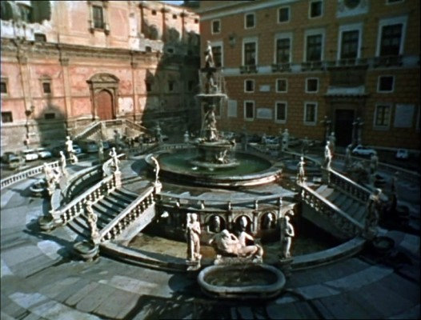
Piazza Pretoria
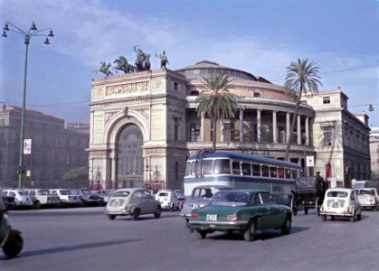
Teatro Politeama Garibaldi
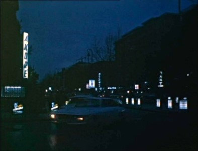
Piazz Ruggero Settimo/Via della Liberta
THE
SAINT: Vendetta for
The Saint (Jim O’Connolly: December, 1967)
Establishing shot of Naples at night. The
Saint takes Gina to see the sights of Palermo including Piazza Pretoria
and Piazza Pretoria.
Frascati
RETURN
OF THE SAINT: The
Roman Touch (Jeremy Summers: July 1978)
Simon (Ian Ogilvy) takes Michelle (Kim Goodie) to stay at
a friend’s villa after the staged kidnapping.
RETURN
OF THE SAINT: Murder
Cartel (Tom Clegg: July 1978)
Simon Templar arrives just in time to prevent Vidal
(Helmut Berger) from assassinating Kemal (Marne Maitland) under the
nose of Lomax (Don Powell).
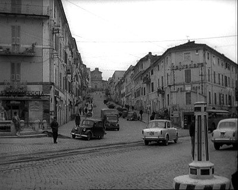
SAINT: The Damsel
in Distress (Peter
Yates: Aug/Sep 1964)
Simon Templar drives Barbara Astral into the local village near
Florence where Guyiseppe Rolfieri has his villa (via Italo Belardi
crossing Corso Don Giovanni Minzoni).
(Identified by Sietse Postma, May 2023)
Leonardo da Vinci–Fiumicino Airport
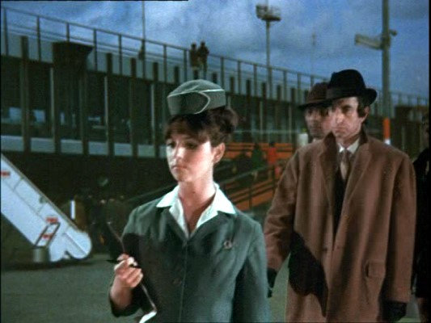
DEPARTMENT S: Les Fleurs du Mal (Cyril Frankel: 1969)
Rome, Italy September 26th: After their plane lands, The Brandini brothers and several passengers follow the stewardess to the terminal (back projection).
(Identified by Michael Richardson, October 2023)
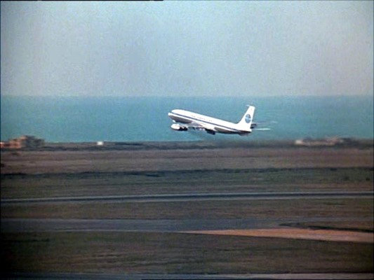
DEPARTMENT S: The
Perfect Operation (Cyril
Frankel: February 1969)
Jason
King returns to London having found that the Istanbul hospital records
book has pages missing regarding Haslett-Wood’s operation there 15
years earlier (taking off from Leonardo da Vinci-Fiumicino Airport).
(Spotted by Michael Richardson, November 2023)
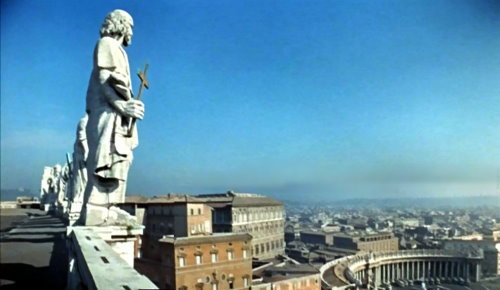
Saint Peter’s
DANGER
MAN: View from the
Villa (Seth Holt: 1959)
Fontana di Tritone, Piazza Barberini, Rome, Italy – Establishing shot
Rome. Also backdrop to café where Drake goes looking for information is
Piazza Foro Traiano.
(Identified by Paul Stroud, March 2014)

DANGER
MAN: The Paper Chase
(Sidney Cole: 1966)
It is late at night and raining when Gordon Symonds parks his car in a
Roman side street (establishing footage of Victor Emmanuel II Monument
and the Twin Churches, Piazza Del Popolo). Later John Drake follows
Laprade to his meeting with a Soviet agent and records their
conversation (shots of Piazza Barberini and Hotel Intercontinental de
la Ville, 67/69 via Sistina*).
*(Identified by Angelo Zumbo, September
2008)
Simon Templar (Roger Moore) arrives by carriage at The Coliseum. He avoids the attention of street photographers as he enters the building.
DANGER
MAN: You’re Not in Any
Trouble, Are You? (Don Chaffey: 1964)
Coliseum – Drake flies into Rome to investigate the death of Bill Ellis
(establishing shots of The Coliseum and Saint Peter’s). - Drake
receives a message to “Be at main Entrance Termini 10a.m. tomorrow”
(Roma Termini Railway Station and Piazza del Cinquecento), he does as
he is told. Later he returns with the deposit for the hit he has
organised.
THE PROTECTORS: A Case for Right (Michael Lindsay-Hogg, Summer 1972)
At house owned by Prince Carpiano about five miles outside Rome, Harry (Robert Vaughn) drives The Contessa (Nyree Dawn Porter) to one of The Prince’s exclusive costume parties in his car. Chino (Anthony Chinn) parks the Rolls in the car park just in case.
(Identified by Sietse Postma, March 2025)
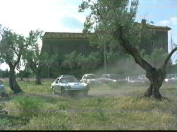
 Piazza Giunone Regina
Piazza Giunone Regina

Brett Sinclair (Roger Moore) arives at Sidonie's appartment in his DBS, BS1.
(Identified by Sietse Postma, August 2018)
Villa Palladio, Via della Camilluccia

photo: Wannenes Properties
THE PROTECTORS: A Case for Right (Michael Lindsay-Hogg, Summer 1972)
The Contessa’s villa near Rome
(Identified by Sietse Postma, March 2025)
Palazzo Missimo alle Colonne,Corso Vittorio Emanuele II
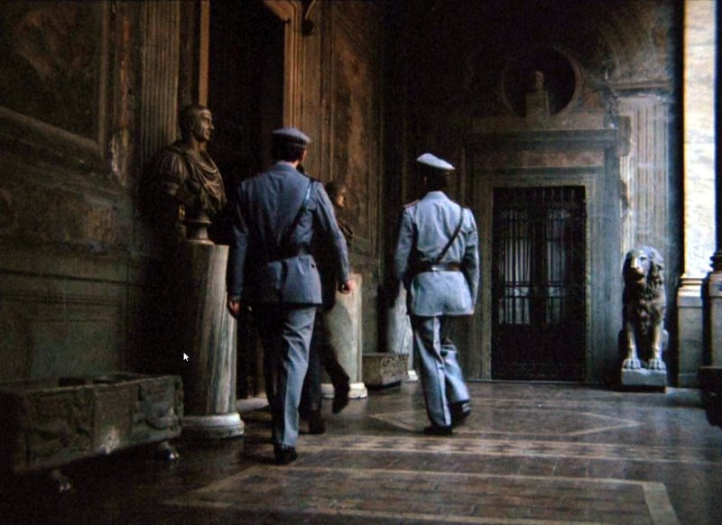
THE PERSUADERS!: Five Miles To Midnight (Val Guest: 1970)
Brusati and his men arive at the Roccos' appartment to investigate the shooting Gino Franco.
(Identified by Sietse Postma, August 2018)
Via dei Funari
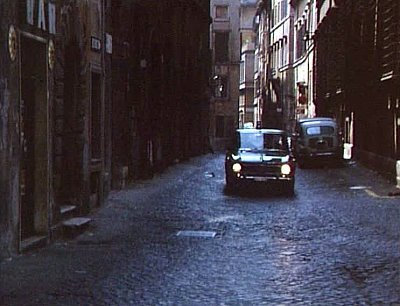
THE PERSUADERS!: Five Miles To Midnight (Val Guest: 1970)Brusati and his men race through the streets of Rome to the Fancos' appartment where a shooting has been reported.
(Identified by Sietse Postma, August 2018)
Italian Post building, Piazza Bologna
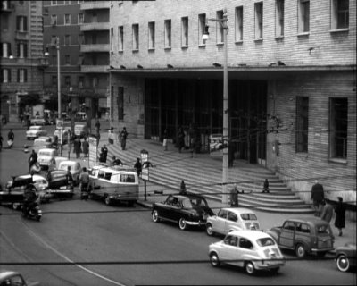
Piazza Bologna
THE
SAINT: The Damsel in
Distress (Peter Yates: Aug/Sep 1964)
Allesandro and Simon Templar arrive in Florence.
(Identified by members ofThe
Italian Section of
S.H.A.D.O., September 2008)
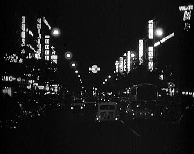
Via Leonida Bissolati
DANGER
MAN: No Marks for
Servility (Don Chaffey: 1964)
Drake is sent to Rome to act as butler to the Barnareses.
(Identified by members ofThe Italian
Section of S.H.A.D.O., September
2008)
DANGER
MAN: You’re Not In Any
Trouble, Are you? (Don Chaffey: February 1965)
Establishing shot of Rome where Bill Ellis is in his hotel room.
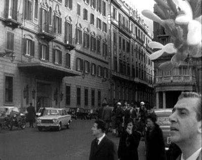
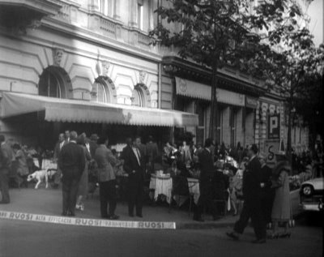
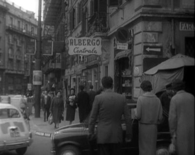
Hotel Intercontinental de la Ville, Caffè Doney and Piazza Barberini
Hassler Villa Medici Hotel, Piazza della Trinità dei Monti
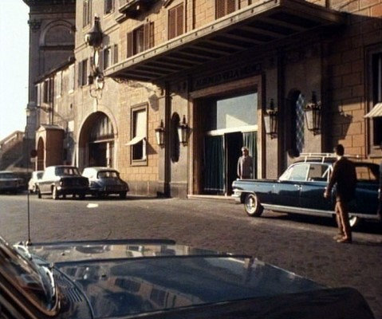
 THE BARON:
Night of the Hunter
(Roy Baker: July 1966)
THE BARON:
Night of the Hunter
(Roy Baker: July 1966)Mannering and Cordelia discuss their plans back at their hotel while ordering breakfast.
(Identified by Paul Stroud, June 2015)
THE BARON: Roundabout (Robert Tronson: August 1966)
Samantha Ballard and John Mannering discuss their plans in Mannering's hotel.
(Identified by Paul Stroud, June 2015)
Via Vittorio Veneto
DANGER
MAN: You’re Not In Any
Trouble, Are you? (Don
Chaffey: February 1965)
John Drake goes to the Michelangelo Hotel in Rome to investigate the
death of Bill Ellis.
(Identified by Paul Stroud, June 2014)

DANGER
MAN: You’re Not In Any
Trouble, Are you? (Don Chaffey: February 1965)
John Drake places a personal add in ‘Il Globo’ and the following day a
copy is read at a local news stand.
(Identified by Paul Stroud, June 2014)

DANGER
MAN: The Paper Chase
(Sidney Cole: 1966)
John Drake follows Laprade to his meeting with a Soviet agent and
records their conversation.
(Identified by Angelo Zumbo and by members ofThe Italian Section of
S.H.A.D.O., September 2008)
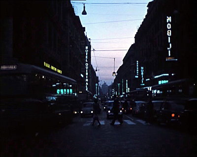
Via Nazionale
THE
BARON: The Long, Long
Day (Roy Baker: April 1966)
Establishing shots of Rome at night including the Coliseum, Victor
Emmanuel II Monument and Via Nazionale. Later Cordelia is still trying
on dresses in Rome (establishing shot of Spanish steps, Piazza
Trinitàdei Monti).
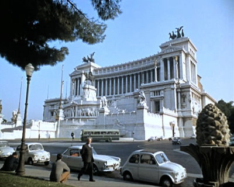
Victor Emmanuel II Monument
THE
BARON: The Long, Long
Day (Roy Baker: April 1966)
The Baron has come to Rome with Cordelia at the request of Vittorio
Guardi the Minister of Justice (St. Regis Hotel, via Vittorio Emanuele
Orlando, close to Piazza Esedra. Via XX Settembre).
(Identified by members ofThe
Italian Section of S.H.A.D.O., September 2008)
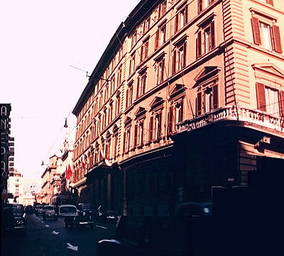
St. Regis Hotel, via Vittorio Emanuele Orlando
THE
BARON: Farewell to
Yesterday (Leslie Norman: September 1965)
Cathy Dorme takes Mannering back to her Rome apartment between shows
(Via Nazionale). He asks her why she left London.
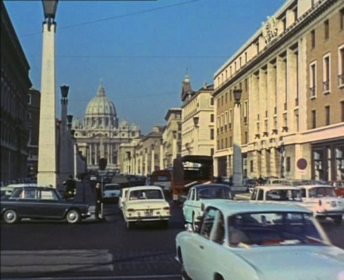
Via Della Conciliazione
THE
SAINT: The Man Who
Liked Lions (Jeremy Summers: July 1966)
Simon Templar is at the The Coliseum to meet his good old friend Tony
Allard. Later Simon leaves in Franco’s taxi for Tony’s flat. After
leaving Tony’s flat Claudia Molinelli returns to her own apartment (Via
Della Conciliazione).
MAN
IN A SUITCASE: Find
the Lady (Rober Tronson, Late 1966)
A cat burglar in Rome breaks into an apartment and steals some valuable
jewels (establishing footage of Victor Emmanuel II Monument and The
Coliseum). Later McGill in in his hotel (Excelsior Hotel, Rome on the
Via Vittorio Venetto/Via Boncompagni) when he is visited by Mori who
has information for him (establishing footage of Victor Emmanuel II
Monument, Via Della Conciliazione, Piazza della Republica and The
Coliseum).
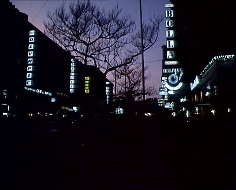
Via Veneto
THE
SAINT: Simon and
Delilah (Roy Baker: January 1967)
Simon Templar is in Rome visiting a film studio (Establishing shot of
St. Peter’s Square). Later Simon persuades two members of the kidnap
gang to take him blindfold (Via dell'Ara Massima di Ercole and via dei
Cerchi Rome) to where Serena Harris and Tig Jordan are being held. On
the journey (starting at Castle Castella Sant Angelo) they stop at
traffic lights (Via della Conciliazione), pass a chiming clock (Piazza
Montecitorio), a fountain (Dell'acqua Paola, in the Janiculum) and a
motorway bridge (Lanciani Bridge and Tangenziale Est). Simon returns to
Roberto Vittorini’s office (Via Veneto looking towards its northern
end, the Pinciana Gate (Aurelian wall), seen at the bottom of the
street.) with his findings. Later Simon is able to retrace his journey
with the kidnappers with Beth.
(Thanks to Andrea Pollett April 2006 and members ofThe Italian
Section of S.H.A.D.O., September 2008)
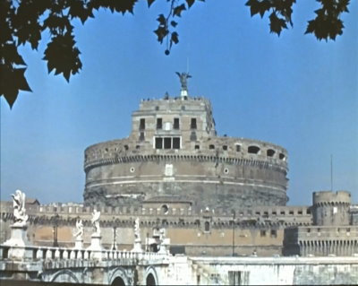
Castle Castella Sant Angelo
THE
CHAMPIONS: A Case of
Lemmings (Paul Dickson: Late Summer 1967)
Establishing shot of St. Peter’s Square, Castle Castella Sant Angelo
and Craig’s hotel (Hotel Bernini Bristol, Via Venito). When Craig
leaves the hotel to get murdered he passes: The Hotel Majestic, The
Coliseum, Monumento a Vittorio Emanuele II, Trevi Fountain and St.
Peter’s Square. Via Nazionale.
(spotted by Paul Stroud, October 2008).
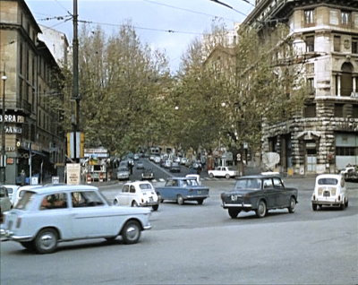
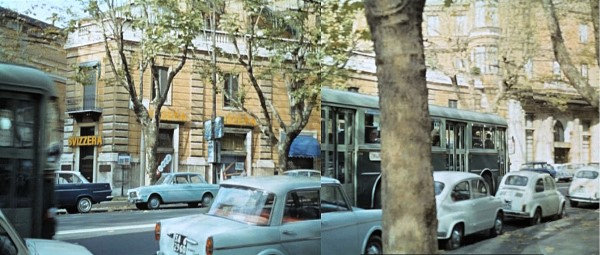
Via Veneto and Hotel Majestic, 50 Via Veneto
DEPARTMENT
S: The Trojan Tanker
(Ray
Austin: June 1968)
Establishing shots Saint Peter’s and Piazza Navona - Jason goes to Rome
to interview Carlo’s chateaux outside Rome to see if he remembers to
whom he gave a certain cigarette lighter.
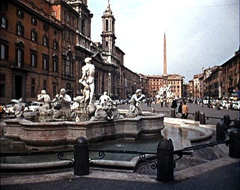
Piazza Navona
DEPARTMENT S: The
Bones of Byrom Blain (Paul Dickson: April 1969)
The train from Geneva with Sir Curtis Seretse on board arrives in Paris
Gare de Lyon (Roma Termini, Railway Station).
(Identified by Michael Richardson, January 2024)
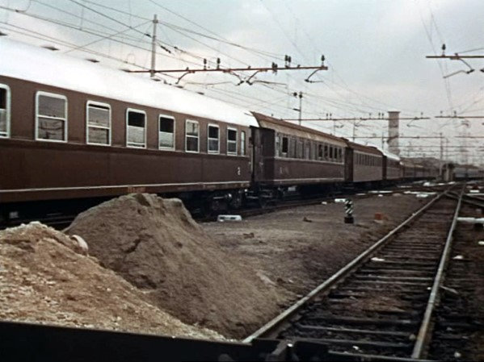
Roma Termini
THE
PROTECTORS: A Case for
the Right (Michael
Lindsay-Hogg: Summer 1972)
Harry (Robert Vaughn) arrives to meet The Contessa (Nyree Dawn Porter)
at The Baths of Caracalla and they discus the case before leaving. As
they leave they pass the monument to Giuseppe Garibaldi on Piazzale del
Gianicolo, they are forced to leave the road by a pair of fake
motorcycle police. Later, on their way to Prince Carpiano’s villa in
the Rolls Harry and Caroline discuss the Prince’s reputation (they
drive through the Arch of Druso, Parco Degli, Scipioni and past tomb of
Cecilia Metella, Via Appia and over a nearby fragment of the ancient
cobblestone paving that once covered the whole road). Harry (Robert
Vaughn) and The Contessa (Nyree Dawn Porter) walk past the Colosseum on
their way to see Fabrizzio. They meet Fabrizzio (Jacques Sernas) at the
Hotel Forum, Via Tor de Conti.
(Thanks to Frank Meyrink, January 2005 and thanks to Andrea Pollett).
THE
PROTECTORS: See No Evil
(Jeremy Summers: Summer 1971)
From her Rolls, Caroline (Nyree Dawn Porter) (in the Piazza Navona) is
tracking a suspect as he approaches the Via del Sanata by the radio
transmitter in his shoe. Harry Rule (Robert Vaughn) is monitoring
Caroline’s progress from across the piazza in his car. The suspect is
lost when he dumps his shoes in a garbage bin. Chino drives Caroline
and Harry, in the Rolls, to see Senator Gordini in a café on the Via
Veneto.
THE
PROTECTORS: See No Evil
(Jeremy Summers: Summer 1971)
Later an assassin (Via del Portico d'Ottavia, in the Ghetto) attempts
to kill The Contessa (Nyree Dawn Porter), but is unsuccessful. He runs
away pursued by Chino (Anthony Chinn).
The assassin is frog marched by The Contessa (Nyree Dawn Porter) and
Chino (Anthony Chinn) past some Roman ruins (Theatre of Marcellus) to
be interrogated. The Assassin takes The Contessa (Nyree Dawn Porter) to
a meeting with a blind man (Alan Webb) (VicoloCostaguti and the Carmel
Temple, the temple has been completely cleaned and restored in 2004.
You can see what these locations look like now at Andrea
Pollett’s page).
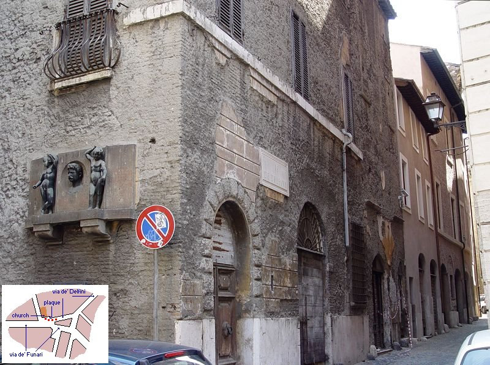
via de' Delfini, Photo: Andrea Pollett
THE
PROTECTORS: See No Evil
(Jeremy Summers: Summer 1971)
Harry (Robert Vaughn) meets up with a contact outside a church (via de'
Delfini) and is bundled off in a van. Harry is driven in the back of a
van to see Lucello, the Mr. Big of the Roman underworld (This is
PiazzaleUgo La Malfa, along the western side of the old Circus Maximus
area. The actual arena is below the ground level, as the road runs
where the tiers once stood, the remains of the imperial palace are
clearly in sight. The white artefact, partly seen, is the base of the
monument of Giuseppe Mazzini). Harry continues his journey driven in
the back of a van (Via Veneto looking towards its northern end, the
Pinciana Gate (Aurelian wall), seen at the bottom of the street.)
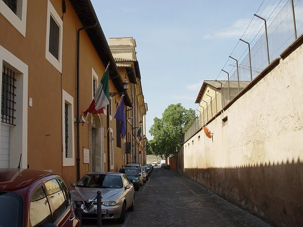
Via di San Michele, Photo: Andrea Pollett
THE
PROTECTORS: See No Evil
(Jeremy Summers: Summer 1971)
Harry eventually reaches his final destination. Soon after The Contessa
(Nyree Dawn Porter) is led to the same location by the blind man (Alan
Webb) (The street is called via di San Michele, after the large complex
on the left (San Michele), once a hospice and a house of correction for
teenagers since the early 19th century, then (1980s) turned into the
headquarters of the Central Institute for Restoration).
(Thanks to Frank Meyrink, February 2005 and
thanks to Andrea Pollett April 2006).
THE
PERSUADERS!: Five
Miles to Midnight (???)
Opening view establishing "ROME" is from the Piazza del Popolo looking
towards the Vatican.
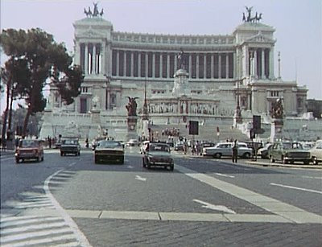
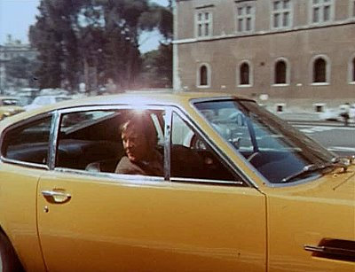
THE
PERSUADERS!: Five
Miles to Midnight (???)
Brett (Roger Moore) jaunts around Rome driving his Aston Martin to
Sidonie's well soundproofed flat. On the way he passes the Vittorio
Emanuele II monument and drives up Piazza di Venezia, he passes the
Colosseum, the Quirinale Palace (south end of Via del Quirinale), along
the Via Vittorio Venetta (arches at end of road).
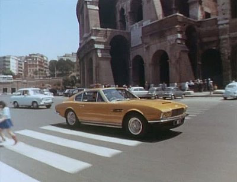
THE
PERSUADERS!: Five
Miles to Midnight (???)
The main part of the episode in Rome was filmed around the surrounding
streets of the Vatican. Unfortunately, I could not find the exact
streets but this was confirmed by Carl Seagar that it was around this
area that the crew filmed here. Carl was the driver supplied by Aston
Martin for filming on the series.
THE PROTECTORS
Opening titles
When Nyree Dawn Porter is introduced.
(Information courtesy of Jaz Wiseman, some more detail added by Paul
Stroud)
THE
PERSUADERS!: The Man
in the Middle (???)
Brett is again seen driving his Aston Martin around the Coliseum.
Obviously this piece of film was from the same sequence used in Five
Miles to Midnight. He also drives past the Triumphal Arch of
Constantine and up the Via de S. Gregorio. The Arch was built in A.D.
315 and celebrates the Emperor Constantine's victory over his rival
Maxentius. (A bit of history never hurt anybody!). The final time we
see Brett driving in Rome he is travelling down the Via D.
Concilliazione with St Peters clearly visible in the background. This
is the main approach road to St Peters and is obviously very busy, so
if you do go there watch out for the Italian drivers!
(Information courtesy of Jaz Wiseman)
Villa Giovanelli - Fogaccia
Harry (Robert Vaughn) and The Contessa (Nyree Dawn Porter) arrive at the villa on the Via Apia Antiqua (Villa Giovanelli - Fogaccia, Via Nazareth) owned by the Prince Garciano. Here Harry hopes to find out more about the case.
(Identified by Angelo Zumbo, September 2008)
RETURN
OF THE SAINT: Vicious
Circle (Sam Wanamaker: July 1978)
Most of the action takes place in and around Rome.
RETURN OF THE SAINT:
The Roman Touch (Jeremy
Summers: July 1978)
Most of the action takes place in and around Rome.
RETURN
OF THE SAINT: Murder
Cartel (Tom Clegg: July 1978)
Most of the action takes place in and around Rome.
RETURN
OF THE SAINT: The
Village That Sold Its Soul (Leslie Norman: May 1978)
Most of the action takes place in and around Sermoneta.
Venice
RETURN
OF THE SAINT: Duel in
Venice (Jeremy
Summers: April 1978)
Most of the action takes place in and around Venice.